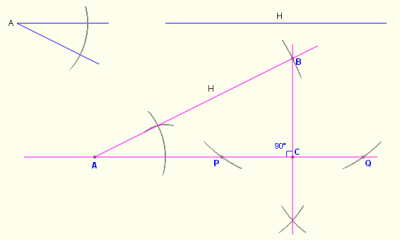

This page shows how to construct a right triangle that has the hypotenuse (H) and one angle (A) given. It works in three steps:
The above animation is available as a printable step-by-step instruction sheet, which can be used for making handouts or when a computer is not available.

| Argument | Reason | |
|---|---|---|
| We first prove that ∆BCA is a right triangle | ||
| 1 | m∠BCA = 90° | BC was constructed using the procedure in Perpendicular to a line from a point. See that page for proof. |
| 2 | Therefore ∆BCA is a right triangle | By definition of a right triangle, one angle must be 90° |
| Now prove BA is the hypotenuse H | ||
| 3 | AB = the given hypotenuse H | AB was copied from H at the same compass width |
| Now prove ∠BAC is the given angle A | ||
| 4 | m∠BAC = given m∠A | Copied using the procedure in Copying an angle. See that page for proof |
| 9 | ∆BCA is a right triangle with the desired hypotenuse H and angle A | From (2), (3), (4) |